SV_visualization.RmdplotCNprofile can draw structural variants on top of a
copy number profile. This vignette covers the data format it expects,
then works from a single SV up to whole-genome views with many.
The example data is the OV2295-derived cell line SA921:
CNbins holds the copy number, SVs holds
destruct breakpoint calls for the same sample.
data(CNbins)
data(SVs)
# CNbins bundles several samples; keep the one the SVs were called on
cn <- dplyr::filter(CNbins, grepl("^SA921", cell_id))
cell <- unique(cn$cell_id)[1]SV is a data frame with one row per breakpoint. Two
columns describe each breakend, plus the read support:
head(SVs, 3)
#> chromosome_1 position_1 strand_1 chromosome_2 position_2 strand_2
#> 1 1 15699950 + 1 15581820 -
#> 2 1 16928143 - 1 120401537 -
#> 3 1 16969869 + 3 49728337 -
#> type rearrangement_type read_count
#> 1 duplication duplication 8
#> 2 inversion unbalanced 9
#> 3 translocation unbalanced 6| Column | Required | Notes |
|---|---|---|
chromosome_1, position_1,
strand_1
|
yes | first breakend |
chromosome_2, position_2,
strand_2
|
yes | second breakend |
read_count |
for "lines_and_arcs"
|
supporting reads |
type, rearrangement_type
|
optional | used by the "curves" style |
Strands must be the characters "+" and "-".
Callers that store them as logicals need converting first, otherwise the
arcs are silently dropped:
SVs <- dplyr::mutate(SVs,
strand_1 = ifelse(strand_1, "+", "-"),
strand_2 = ifelse(strand_2, "+", "-"))The strand pair determines how each SV is coloured.
classify_sv_orientation is what plotCNprofile
uses internally:
SVs %>%
mutate(orientation = signals:::classify_sv_orientation(.)) %>%
count(orientation, type)
#> orientation type n
#> 1 ++ inversion 87
#> 2 +- deletion 75
#> 3 +- duplication 69
#> 4 -- inversion 116
#> 5 Translocation translocation 100| Orientation | Meaning | Copy number effect |
|---|---|---|
-+ |
tandem duplication | gain |
+- |
deletion-type | loss |
++ / --, short range |
foldback inversion | gain |
++ / --, long range |
inversion | neutral |
Translocation |
inter-chromosomal | context dependent |
Positions do not have to be ordered: for intra-chromosomal SVs where
position_1 > position_2, plotCNprofile
flips the breakends and their strands so the orientation stays
correct.
Start with a single deletion-type SV on chromosome 5. Its two breakends bracket a region where copy number drops from 4 to 2, which is what you want to see — the SV and the copy number change are the same event.
sv_chr5 <- SVs %>%
filter(chromosome_1 == "5", chromosome_2 == "5",
position_1 > 126e6, position_1 < 127e6)
sv_chr5
#> chromosome_1 position_1 strand_1 chromosome_2 position_2 strand_2 type
#> 1 5 126517243 + 5 140295954 - deletion
#> rearrangement_type read_count
#> 1 unbalanced 121
plotCNprofile(cn, cellid = cell, chrfilt = "5", maxCN = 10,
SV = sv_chr5, sv_style = "lines_and_arcs")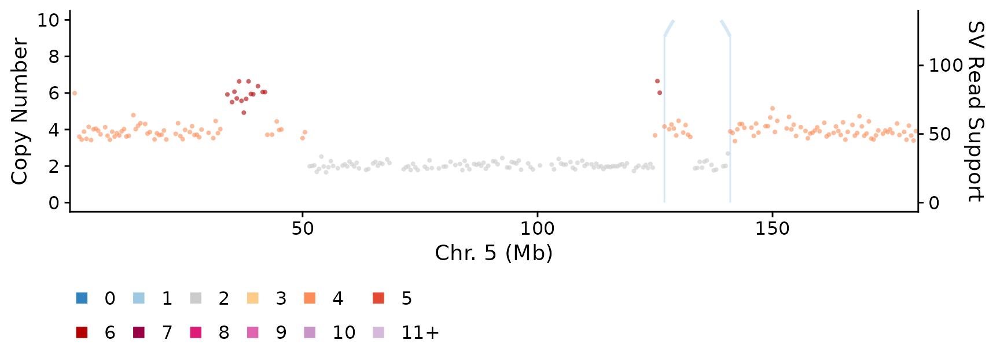
The vertical line marks each breakend and the arc joins them. Height
encodes read_count against the secondary axis on the
right.
sv_style controls how SVs are drawn.
"curves" (the default) draws bezier curves coloured by
rearrangement_type; "lines_and_arcs" draws the
lines and arcs above, coloured by strand orientation.
"both" draws each.
plotCNprofile(cn, cellid = cell, chrfilt = "5", maxCN = 10,
SV = sv_chr5, sv_style = "curves")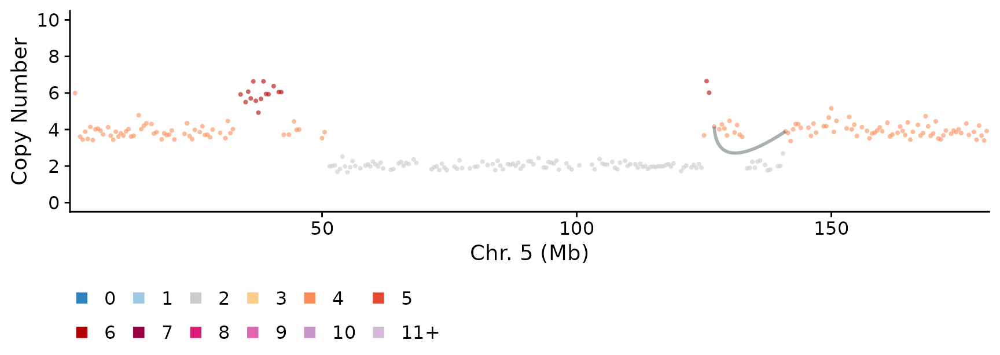
With a whole chromosome’s worth of SVs the picture degrades quickly. Chromosome 1 is the most rearranged in this sample:
sv_chr1 <- SVs %>% filter(chromosome_1 == "1", chromosome_2 == "1")
nrow(sv_chr1)
#> [1] 38
plotCNprofile(cn, cellid = cell, chrfilt = "1", maxCN = 10,
SV = sv_chr1, sv_style = "lines_and_arcs")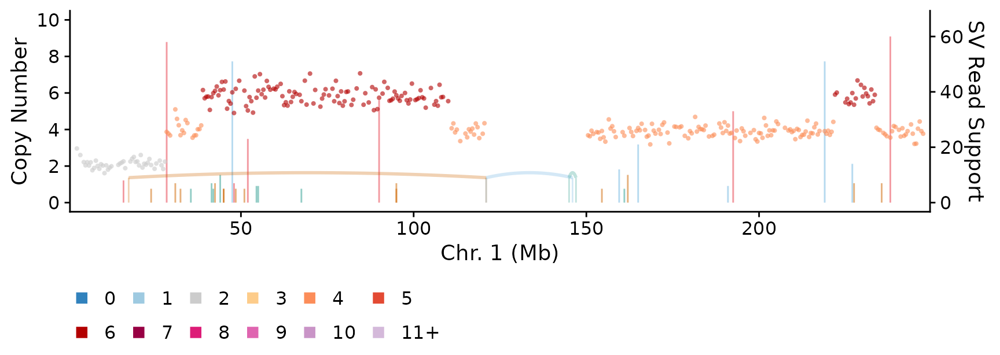
Two problems: the arcs sit on top of the copy number points, and because each arc’s height comes from its read count, every arc peaks somewhere different.
sv_arcs_above = TRUE draws the arcs in a band above the
copy number panel instead. Read count no longer affects the geometry, so
the secondary axis is dropped.
plotCNprofile(cn, cellid = cell, chrfilt = "1", maxCN = 10,
SV = sv_chr1, sv_style = "lines_and_arcs",
sv_arcs_above = TRUE)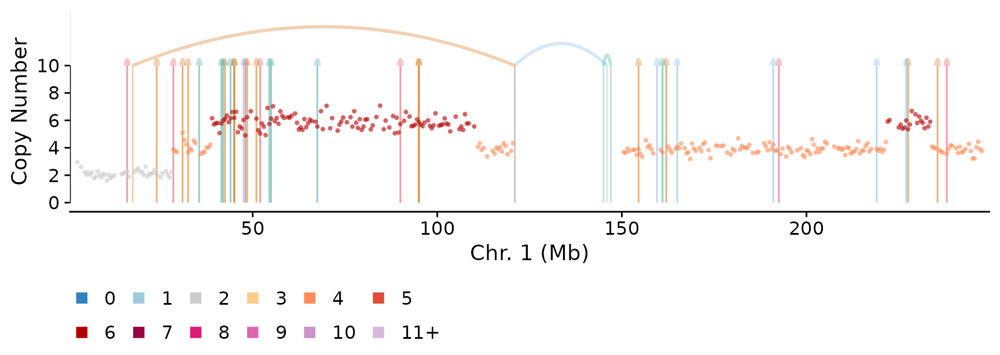
The copy number track is now unobstructed. sv_band_frac
sets how much of the panel the band takes:
plotCNprofile(cn, cellid = cell, chrfilt = "1", maxCN = 10,
SV = sv_chr1, sv_style = "lines_and_arcs",
sv_arcs_above = TRUE, sv_band_frac = 0.4)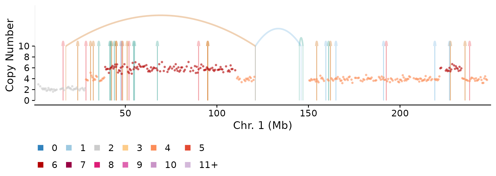
By default the apex of each arc scales with the distance it spans, so
local rearrangements stay low and long-range ones arch over them.
sv_arc_scale = "fixed" gives every arc the same height
instead, which makes short SVs into narrow spikes:
plotCNprofile(cn, cellid = cell, chrfilt = "1", maxCN = 10,
SV = sv_chr1, sv_style = "lines_and_arcs",
sv_arcs_above = TRUE, sv_arc_scale = "fixed")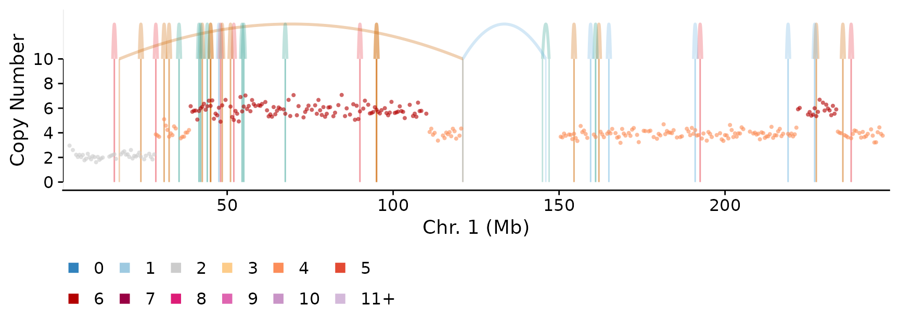
Two floors keep small SVs visible. sv_arc_min_width
matters most: an SV whose breakends fall in the same bin has zero width
and would not render at all — which at 500kb bins is every foldback.
sv_arc_min_height sets the apex of the shortest arcs.
plotCNprofile(cn, cellid = cell, chrfilt = "1", maxCN = 10,
SV = sv_chr1, sv_style = "lines_and_arcs",
sv_arcs_above = TRUE,
sv_arc_min_height = 0.5, sv_arc_min_width = 0.01)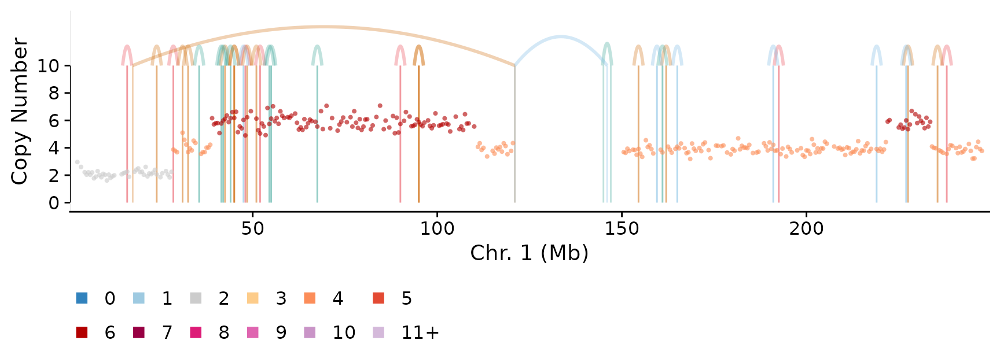
sv_arc_side puts the baseline in the middle of the band
and splits arcs either side of it. With "cn_effect",
gain-associated junctions (tandem duplications, foldbacks,
translocations) arch up and loss-associated or copy-number-neutral ones
hang down, so an arc’s side predicts the copy number step beneath
it.
plotCNprofile(cn, cellid = cell, chrfilt = "1", maxCN = 10,
SV = sv_chr1, sv_style = "lines_and_arcs",
sv_arcs_above = TRUE, sv_band_frac = 0.4,
sv_arc_side = "cn_effect")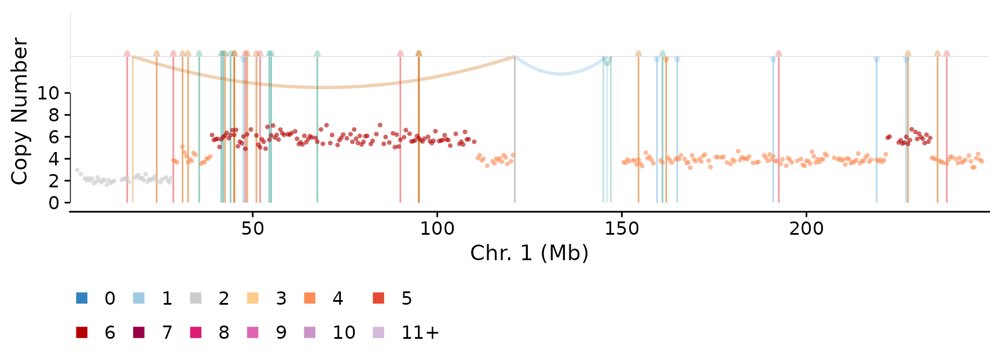
"translocation" and "foldback" are the
other built-in rules. You can also pass the name of a column in
SV holding "up"/"down" to split
on anything you like:
sv_chr1_side <- sv_chr1 %>%
mutate(side = ifelse(read_count >= 30, "up", "down"))
plotCNprofile(cn, cellid = cell, chrfilt = "1", maxCN = 10,
SV = sv_chr1_side, sv_style = "lines_and_arcs",
sv_arcs_above = TRUE, sv_band_frac = 0.4,
sv_arc_side = "side")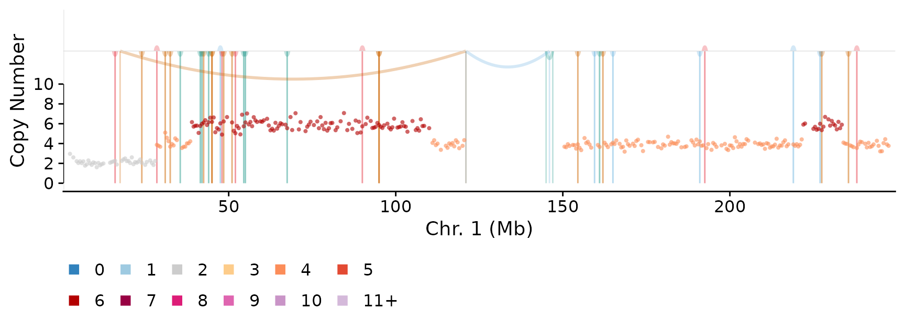
The vertical lines run from 0 up to the arc baseline and are drawn
behind the copy number points. At high SV density they can dominate;
sv_show_lines = FALSE leaves the arcs alone.
plotCNprofile(cn, cellid = cell, chrfilt = "1", maxCN = 10,
SV = sv_chr1, sv_style = "lines_and_arcs",
sv_arcs_above = TRUE, sv_show_lines = FALSE)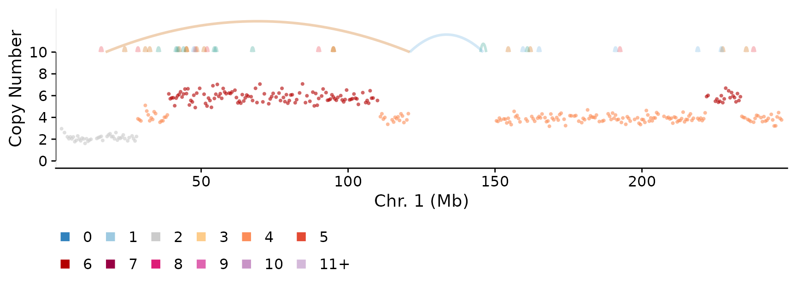
sv_line_alpha controls the lines independently of
sv_arc_alpha, which is useful because the lines sit behind
the data and can take more weight than the arcs.
A translocation is only drawn when both breakends
are inside the plotted region, so inter-chromosomal SVs need both
chromosomes in view. Passing several chromosomes to chrfilt
works, but regions is usually better: it crops to the
interesting windows and keeps the arcs between them.
regions <- data.frame(chr = c("17", "2"), start = c(60, 5), end = c(70, 50))
sv_1702 <- SVs %>%
filter((chromosome_1 == "17" & chromosome_2 == "2") |
(chromosome_1 == "2" & chromosome_2 == "17"))
plotCNprofile(cn, cellid = cell, regions = regions, maxCN = 10,
SV = sv_1702, sv_style = "lines_and_arcs",
sv_arcs_above = TRUE, sv_band_frac = 0.35)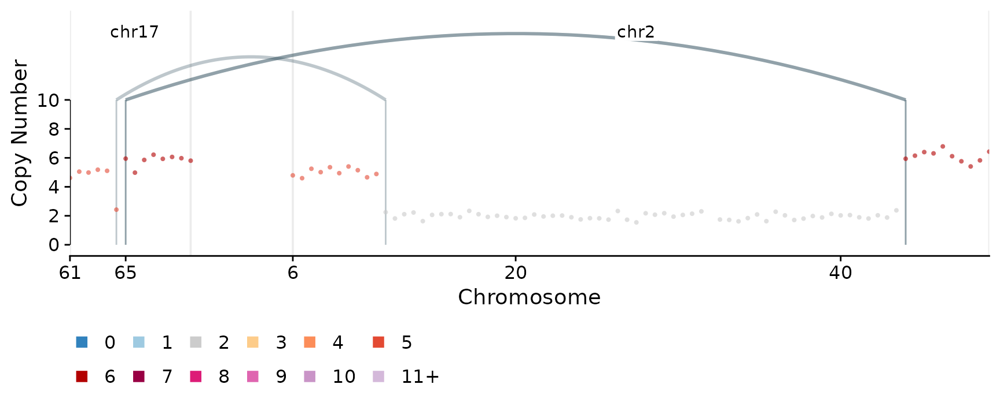
show_chrbreaks = FALSE removes the grey lines that
bracket each region, and ybreaks overrides the y axis
breaks — useful in short panels, where the defaults collide.
plotCNprofile(cn, cellid = cell, regions = regions, maxCN = 10,
SV = sv_1702, sv_style = "lines_and_arcs",
sv_arcs_above = TRUE, sv_band_frac = 0.35,
show_chrbreaks = FALSE, ybreaks = c(0, 5, 10))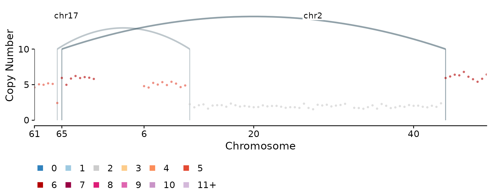
Everything works genome-wide, though at this scale only the broadest structure is legible.
plotCNprofile(cn, cellid = cell, maxCN = 10,
SV = SVs, sv_style = "lines_and_arcs",
sv_arcs_above = TRUE, sv_band_frac = 0.3,
sv_show_lines = FALSE, sv_arc_alpha = 0.6)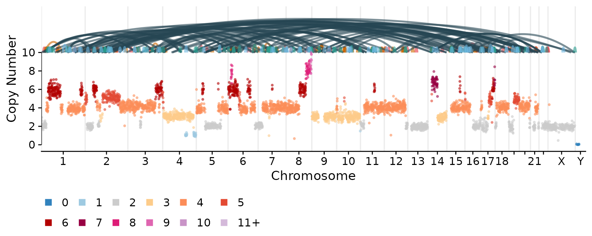
Orientation colours are off by default.
show_sv_legend = TRUE adds them to the plot, or
get_sv_lines_and_arcs_legend() returns a standalone legend
for assembling figures by hand.
cowplot::plot_grid(get_sv_lines_and_arcs_legend(direction = "horizontal"))